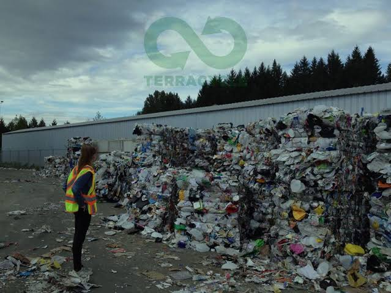
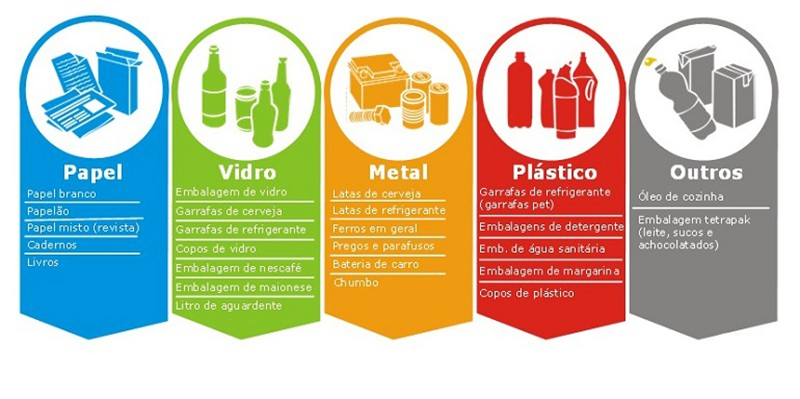
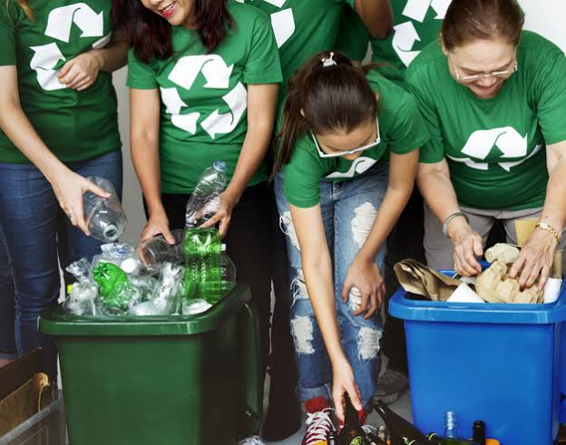

Você está pronto para mostrar que entende tudo sobre reciclagem? Acerte os lixos certos e salve o planeta!
🎮 Jogar AgoraAprenda a descartar resíduos corretamente e contribua para um mundo mais sustentável.
A reciclagem é uma prática essencial para a preservação do meio ambiente, e muitas vezes podemos começar a aplicar esses hábitos dentro de nossas próprias casas.
Reciclagem é o processo de transformar materiais descartados em novos produtos, reduzindo a necessidade de utilizar novos recursos naturais.
Reciclar é importante porque ajuda a preservar o meio ambiente, economiza energia, diminui a poluição e reduz a quantidade de lixo.
